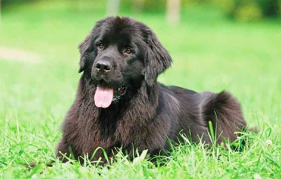
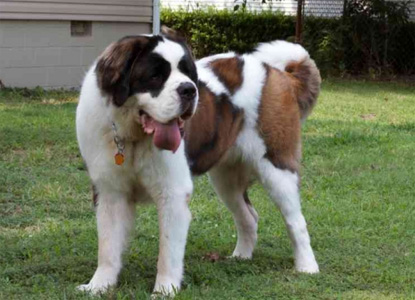
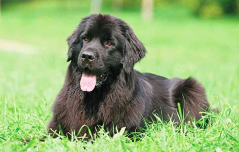
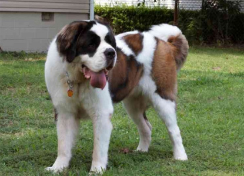
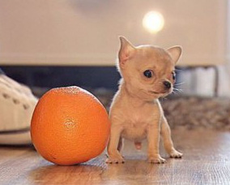

Dogs so difference
Huge dogs
 Mastiff

Nyufaundlen

Senbernar
Mastiff

Nyufaundlen

Senbernar
The smallest dog in the World

Chihuahua
Сomparison table of dogs
| breed | weight | Height | feed |
| Mastiff | max 59 kg | max 99 sm | meat |
| Nyufaundlen | max 70 kg | max 76 sm | meat |
| Senbernar | max 91 kg | max 90 sm | meat |
| Chihuahua | 0.3 kg | one orange | air |
the Advantages of big dogs
- Thieves afraid them
- They are strong
- They are cute
Disadvantages of big dogs
- They eat a lot
- They have a lot of weight